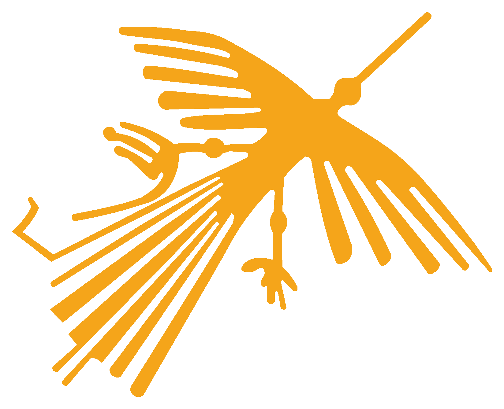
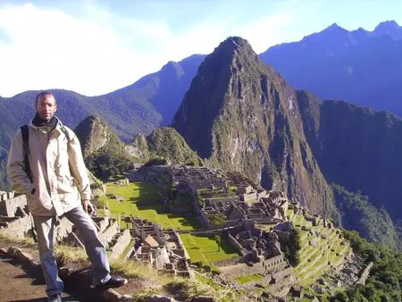

Découvrez le Pérou,
autrement.
Des voyages en petit groupe, en privé ou entièrement sur mesure, construits avec nos partenaires péruviens, du désert du Pacifique aux hauts plateaux andins jusqu'à l'Amazonie.
Quand partir au Pérou ?
La période idéale s'étend d'avril à décembre : ciel clair sur les Andes, sentiers du Machu Picchu praticables, visibilité optimale sur le lac Titicaca et conditions douces en Amazonie. De janvier à mars, c'est la saison des pluies dans la sierra, et le Chemin de l'Inca ferme en février.
Météo en direct sur nos sept destinations clés
Relevé mis à jour à chaque visite. Source : Open-Meteo.
Trois façons de partir
Le même Pérou, trois manières de le vivre.
En petit groupe
- Un circuit déjà conçu, avec des dates de départ fixes
- De quatre à huit voyageurs
- Départ garanti à partir de quatre inscrits
En privé
- Un circuit déjà conçu, mais rien qu'à vous
- De deux à huit voyageurs, vous choisissez qui vous accompagne
- La date de départ est la vôtre
Sur mesure
- Un voyage conçu de zéro, à partir de vos envies
- Rythme, étapes et hébergement adaptés à vous
- Répondez au questionnaire, nous vous rappelons
Trois itinéraires phares
Saveurs du Pérou
El Inti
Escapade Andine solidaire
SolidaireDAIRE
Un pour cent du chiffre d'affaires de nos circuits est versé chaque année à l'Aldea Infantil Virgen de la Paz, à Chiclayo.
Équipement des maisons, vêtements, scolarité, et surtout l'accompagnement des jeunes à leur sortie de l'établissement. Nous publions chaque année le montant versé et son affectation. Aucune visite, aucun volontariat, aucune photo d'enfant : notre soutien n'achète rien.
Lire notre engagement en détail« C'était un circuit inoubliable. »

Des paysages incroyables et des villes emblématiques, le canyon de Colca, Cusco, Arequipa, les salines de Maras, le lac Titicaca et ses îles en totora, Lima, entre autres, et sans oublier le Machu Picchu. Avec deux jours et une nuit passés auprès d'une famille péruvienne.
Un séjour immersif qui m'a permis de découvrir le Pérou, son histoire, sa culture et sa délicieuse gastronomie. Je n'ai pas osé goûter le cuy, le cochon d'Inde à la broche.
Je tiens à remercier Frédéric et toute l'équipe de Solidaire Inca Tour pour l'organisation sur mesure, les conseils, et les guides locaux francophones très sympathiques.
Une question, une envie encore floue, une date à caler ?